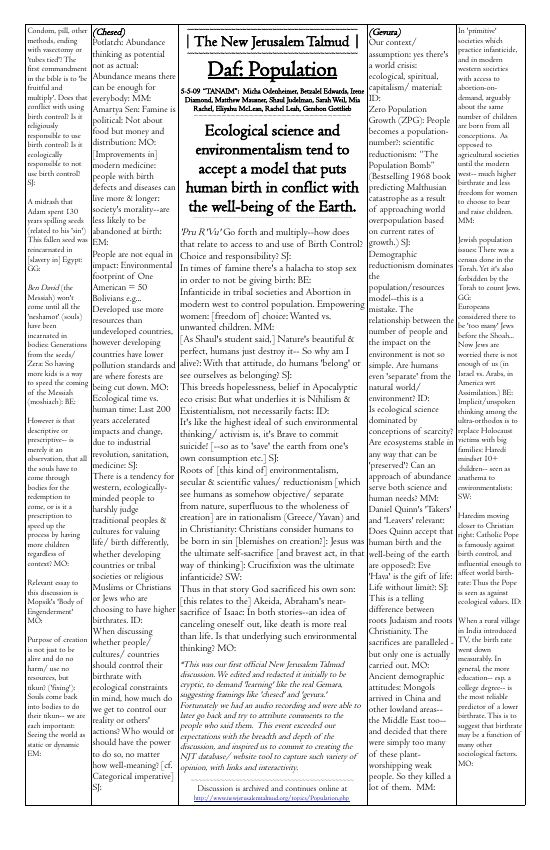
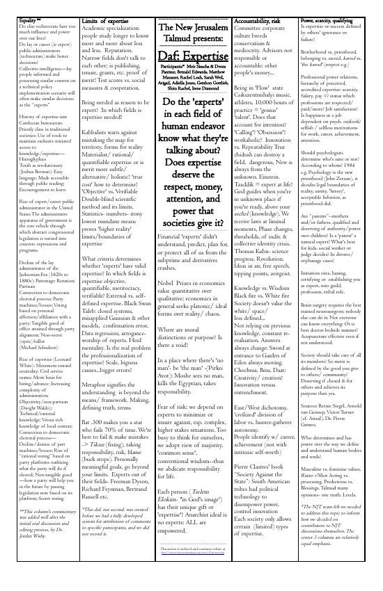
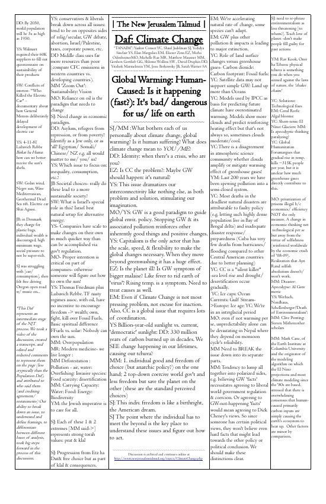
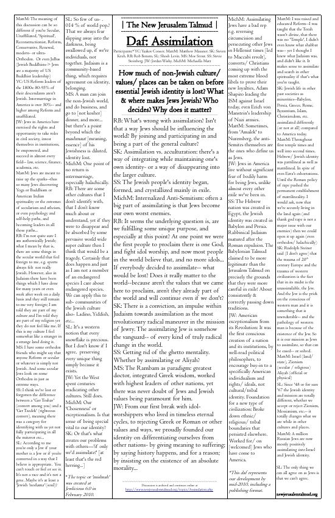

The New Jerusalem Talmud brings the talmudic discussion and non-linear graphic format back to life to discuss current topics and controversies, secular or religious.
Instead of the Socratic there's only two sides, and only one can be ‘right’: rather, in talmudic discussions, we recognize that there can be more than two sides, maybe all of them are ‘right’ depending on which lineage, values, school of thought, or basis they are coming from. It's an emergent process, like life itself.

Population
Expertise
Climate Change
Assimilation